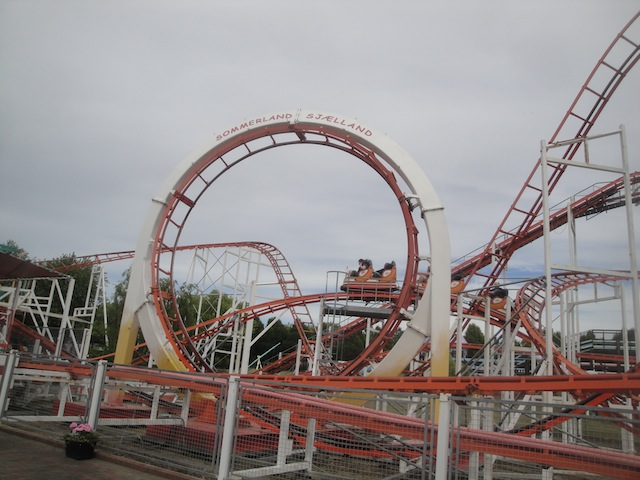
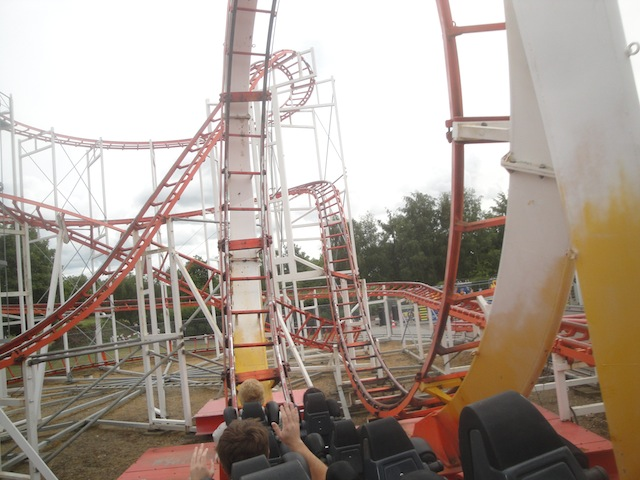
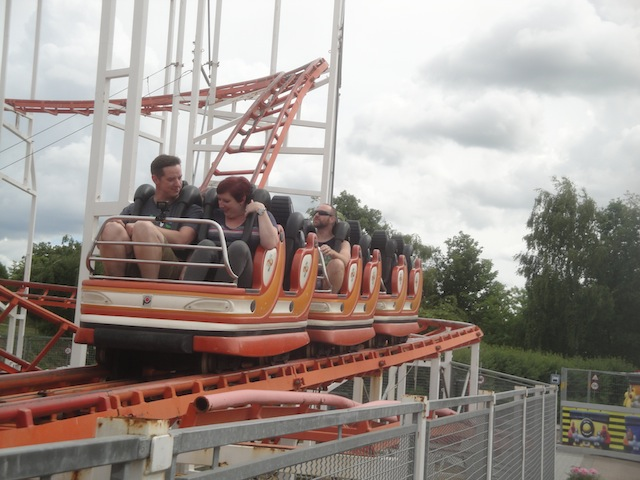
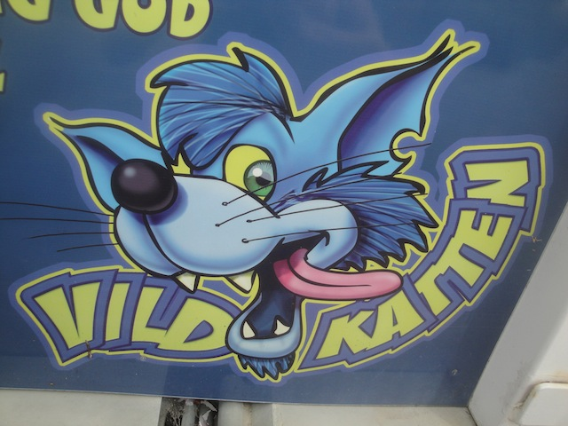

| |
Vildkatten Review

We're here at Sommerland Sjaelland. Today's ride we'll be reviewing for you is VildKatten. *Sigh* The star attraction of this park is indeed, a tiny little Pinfari looper. Yeah, groan. Get it out of your system. Though to be fair, this one isn’t that bad. I might even dare to say…mildly fun. Yeah, it’s not that good, but don’t expect too much from a park like this. Plus other clones of this are much more painful. After getting in the trains and pulling down the OTSRs, we're off. You go around a turn and begin to climb the lifthill. We pretty much get a decent view of Sommerland Sjaelland, which isn’t that special to look at. But whatever, we crest the lifthill, go around a turn, and away we go. We head down the first drop. Wee!! Not that bad. Hell, there’s actually some airtime if you sit in the very back. It kind of surprised me. We then rise up, sadly, there’s no airtime here though. We then head down this curved drop. Yeah, it looks painfully brutal since Pinfaris…don’t have good transitions. But it’s not that bad. So anyways, down the spiral drop and INTO THE LOOP!!! Yep, it’s a Looping Pinfari, and we tumble upsidedown. Fun little loop. You know what? This ride isn’t that bad. We then rise up a small hill and into a sharp turn. SLAM!!! OUCH!!! OK, that hurt. But come on. Let’s keep it on the bright side. That was the only really painful part of the ride. We then head around a turn, through some straight track, and then head down another little curved drop. Wee. We head around a banked turn to the ground before going through this tiny little banked hill. No, it’s not that fun. It’s mostly just awkward and feels poorly designed. It’s banked to the left, goes to normal at the top, and then banks to the other side coming down. Just be thankful it’s not painful on this one like it is on clones of this ride. So yeah. Down the hill, banked and immediately go into a sharp banked turn. It’s an aggressive little ride. And you can tell that this should hurt. Head up another awkward little hill before rolling throughs some straight track, along with some trims. Yippee. Roll through this big turn, and glide into the brake run. So yeah. VilKatten is not a good ride by any means. But compared to the other Pinfari Loopers, it’s actually a fun little ride. I mean sure, the ending is weird and awkward, it’s got a good jolt to it, and like most non-kiddy Pinfaris, it feels like it was made with chewing gum and rubber bands. But it’s much better than the other clones of this ride, which are just flat out brutal. I don’t really need to recommend it since if you’re going to Sommerland Sjaelland as a roller coaster enthusiast, you’re here to credit whore, and this is pretty much why you came.
5/10
Location: Sommerland Sjaelland
Opened: 2000
Built by: Pinfari
Last Ridden: June 13, 2014
I have ridden this exact same ride at the following parks.
Tivoli Friheden
Vildkatten Photos



Home
|